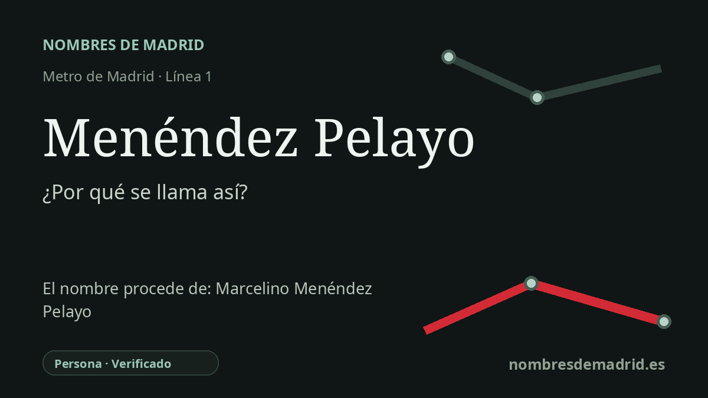

Publicado el · Investigación de Nombres de Madrid · Cómo verificamos cada origen · 8 fuentes consultadas
Respuesta rápida
La estación de Menéndez Pelayo toma su nombre de la avenida cercana, dedicada a Marcelino Menéndez y Pelayo, filólogo, historiador de la literatura y crítico nacido en Santander. Se inauguró en la línea 1 el 8 de mayo de 1923, dentro de la prolongación Atocha-Puente de Vallecas.
La historia del nombre
Menéndez Pelayo es un nombre de estación tomado de la ciudad que la rodea. Los andenes se encuentran bajo la avenida de la Ciudad de Barcelona, cerca de la avenida de Menéndez Pelayo, y la ficha oficial del Consorcio Regional de Transportes sigue identificando accesos en los lados par e impar de esa avenida. Por tanto, la estación lleva el nombre de la vía cercana y no el nombre biográfico completo del personaje.
El nombre más antiguo que hay detrás de la estación es el de Marcelino Menéndez y Pelayo, nacido en Santander en 1856 y fallecido allí en 1912. Fue filólogo, crítico, historiador de la literatura e historiador de las ideas, recordado por obras como Historia de los heterodoxos españoles e Historia de las ideas estéticas en España. En las biografías suele aparecer con la conjunción y, mientras que la avenida madrileña y la estación de Metro la omiten habitualmente y usan Menéndez Pelayo.
La ficha histórica de Metro sitúa la estación en la segunda prolongación hacia el sur de la línea 1, el tramo Atocha-Puente de Vallecas, abierto al público el 8 de mayo de 1923. También documenta su primer entorno urbano: bajo la entonces calle del Pacífico, hoy avenida de la Ciudad de Barcelona, entre Gutenberg y Menéndez Pelayo. La misma ficha recuerda que en 1961 se amplió la longitud de los andenes, de 60 a 90 metros.
La avenida conserva una capa de historia del callejero madrileño. Según la tradición recogida por María Isabel Gea y reutilizada por Madripedia, distintos tramos tuvieron nombres locales anteriores: calle de Muñoz cerca de Alcalá y O'Donnell, ronda de Vicálvaro más al sur y ronda de Vallecas en el tramo próximo al antiguo camino de Vallecas. En 1915, esas referencias previas quedaron reunidas bajo el nombre conmemorativo de avenida de Menéndez Pelayo.
La etimología está bien respaldada. La avenida bordea el lado oriental del Retiro, no el occidental, y discurre desde la calle de Alcalá hasta la avenida de la Ciudad de Barcelona, atravesando varios contextos urbanos de Retiro y Salamanca; no se limita a unir Atocha con Ibiza. El nombre de la estación permanece estable desde su inauguración en 1923.